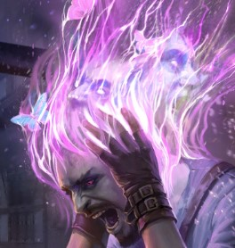
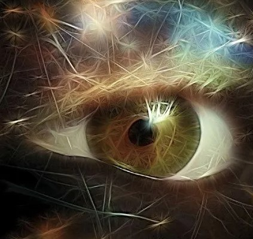
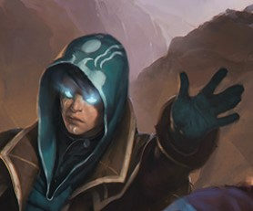
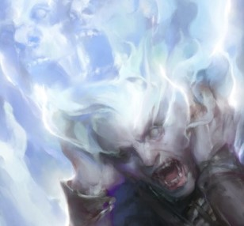
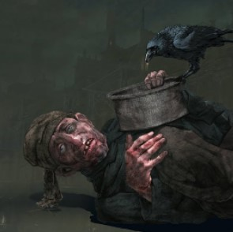

Its consciousness soars around all creation shaping reality with the whims of its brush.
Tier 1 Mind beyond realityYou hone your psychic abilities, slowly realizing the potential of your thought. |
|
 Manifest thoughtAs an action you can cast any spell from any spell list, level of which does not exceed your proficiency bonus. Once you use this feature twice you cant use it again until you finish a long rest |
 Psychic realityAs an action you can start observing reality through your psychic lens for one minute. While in this state you can see creatures that have consciousness within 100 feet of you. While in the state of psychic reality you have disadvantage on attacks and strength abd dexterity saving throws, while attacks against you have advantage. |
Tier 2: Tethered mentalityYour intellect expands beyond your own perception. You start experiencing things beyond yourself. Your mind sometimes wanders outside of thought, tethering itself to the nearest flight of fancy. Mind for you becomes a sixths sense of the body. This is all but a start to the journey however. |
|
 Mind tetheredAs an action you can tether yourself to a willing creature, sharing everything from surface thought to skills and abilities. The tether persists while you are within 500 feet of each other. You can make actions using spells, features and class abilities of each other. You use your own stats for everything except spell attacks and saves, which are kept from the original owner of the ability/spell. After you use this feature once, you cant use it again until you finish a long rest. |
 Wandering mind, never a tame beastAs a consequence of your minds expansion and lack of identity, concentrating becomes a progressively more daunting task for you. You have disadvantage on concentration checks, but whenever your concentration is broken you restore a reaction, and can use it immediately to cast a cantrip, psionic talent or a single attack. |
Tier 2,5: The King of FoolsLong live the kingThe king of Fools, The scum will sing, Society’s ghouls When day will come This freedom dies But till that time We joyly live.... in lies.... What’s that? what’s that? A RAT! A RAT! Is it? Is it? He’s dead! He’s dead! The moon descends The day is nigh The king of Fools Soon, he will die. |
|
 Scavenger, Outcast, ScumYou are able to live off of third of the food required for a regular humanoid. You are also able to scavenge materials to create weapons. Weapons created with this ability have a -1 penalty. |